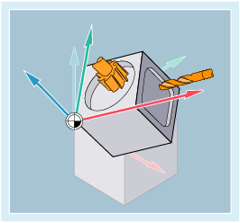

More information
Time of activation
It is recommended that the machining planes G17 to G19 be selected at the start of the program.
Default setting
In the default setting, G18 (Z/X plane) is defined for turning and G17 (X/Y plane) is defined for milling:

Machining planes when turning ① and milling ②
Tool radius compensation
When calling the tool radius compensation G41/G42, the machining plane must be defined so that the controller can correct the tool length and radius.
More information: → Chapter "Tool radius compensation"
Circular interpolation
The controller requires the specification of the machining plane for the calculation of the direction of rotation.
More information: → Chapter "Circular interpolation".
Machining on inclined planes
Rotate the coordinate system with ROT to position the coordinate axes on the inclined surface. The machining planes rotate accordingly:
Tool length compensation on inclined planes
The calculation of the tool length compensation always refers to the non-rotated machining plane that is fixed in space.
| Note |
The tool length components can be calculated according to the rotated machining planes with the functions for "Tool length compensation for orientable tools". |
The offset plane is selected with CUT2D/CUT2DF.
More information: → Chapter "Tool radius compensation"
The control provides convenient coordinate transformation functions for the spatial definition of the machining plane.
More information: → Chapter "Coordinate transformations (frames)"